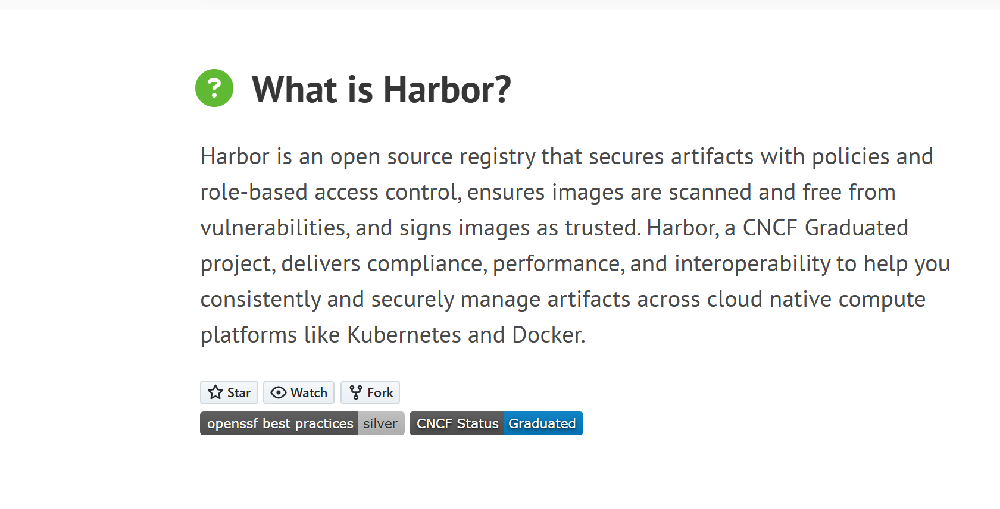
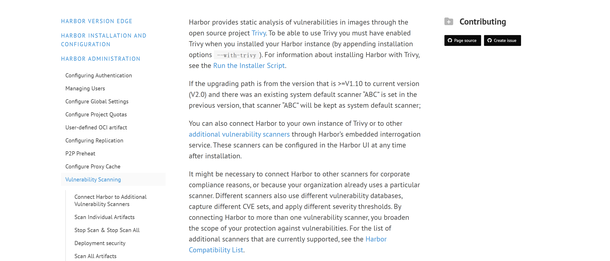
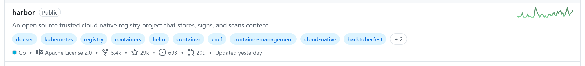
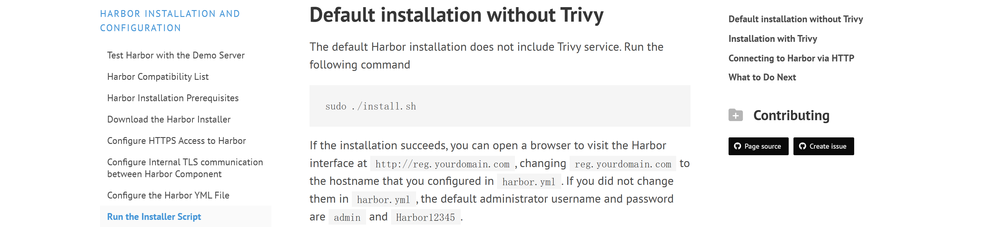

OSS PROJECT INTRO · HARBOR 系列第 1 期：认识项目
开源项目入门系列的每个新项目，都从三个问题开始：它解决什么痛点、凭什么活下来、什么场景该选它。今天开启新项目 Harbor。官方定义一句话：an open source registry that secures artifacts with policies and role-based access control, ensures images are scanned and free from vulnerabilities, and signs images as trusted——一个用策略与基于角色的访问控制保护制品、确保镜像经过漏洞扫描并可签名验证的开源仓库。一句话心智模型：不只是存镜像的仓库，而是企业级的镜像"管理中心"——存储、扫描、签名、复制、权限五件事一个平台管。本期不装任何软件，素材全部来自官方文档与官方仓库，每张图都标出处；你带走四样东西：镜像放公共仓库的四个麻烦、"管理中心"这个心智模型、一套五方选型对比，外加"什么场景该选它"的判断清单。
容器化之后，每个团队都绕不开一个问题：镜像放哪？默认答案是 Docker Hub——官方仓库、镜像最全、免费就能用。个人项目这么用没毛病，但企业一上规模，很快撞上四堵墙：
toomanyrequests 上；把这四个麻烦翻译成需求清单，企业要的私有镜像仓库长这样：协议兼容（现有 docker 命令照用）、自带漏洞扫描、能签名验源、有角色权限和审计、支持跨实例分发。Harbor 就是照着这张清单长出来的。
官网的定义值得逐词读（goharbor.io，2026-09 核对）："Harbor is an open source registry that secures artifacts with policies and role-based access control, ensures images are scanned and free from vulnerabilities, and signs images as trusted."——注意主语是 registry（仓库），但定语全是管理动作：策略、权限、扫描、签名。官网的使命宣言补了下半句：to be the trusted cloud native repository for Kubernetes，做 K8s 值得信赖的云原生仓库。
一句话心智模型：不只是存镜像的仓库，而是企业级的镜像"管理中心"——存储是起点，扫描、签名、复制、权限才是它区别于网盘的部分。用法上它刻意"隐形"：因为完全兼容 Docker 的仓库协议，你的命令一个字都不用改，只换地址（命令出自官方文档《Pulling and Pushing Images》，2026-09 核对）：
# 和 Docker Hub 完全一致的用法，地址换成自家域名
docker login harbor.demo.com
docker tag ubuntu:24.04 harbor.demo.com/demo/ubuntu:24.04
docker push harbor.demo.com/demo/ubuntu:24.04推完回显 digest（摘要值），镜像就进了 demo 这个项目。Helm Chart 也不用另找仓库——Harbor 2.0 起支持 OCI 制品规范，一条 helm push 把 Chart 和镜像存进同一个仓库。对应用代码来说，迁移要改的东西是零行。

goharbor.io 官网"What is Harbor?"区块：官方定义原文 + GitHub 按钮 + CNCF Status: Graduated 徽章（2026-09-19 截图，当日 Star 计数 29,415）。左边开发机和流水线把镜像推进来，右边 K8s 集群按策略拉取，中间这个仓库干了五件事：存制品、扫漏洞、做签名、跨机房复制、管项目权限。存下来只是起点，管起来才是目的——这句话贯穿整个系列，Harbor 的所有功能都长在这条根上。第 3 期我们按组件拆它的架构，今天先记分工。
看家本事四件（口径为官方文档，2026-09 核对）：
| 能力 | 它做什么 | 对你的意义 |
|---|---|---|
| 镜像与 OCI 制品管理 | 容器镜像、Helm Chart 统一入库，完全兼容 Docker/OCI 规范 | 现有命令与流水线零改动，交付物一个仓库管完 |
| 漏洞扫描（Trivy） | 推入即做静态漏洞分析，按严重级别出报告，可配高危拦截；也支持外接其他扫描器 | 镜像上生产前有体检报告，安全卡点有据可依 |
| 内容信任与签名 | 对制品签名、拉取端验签，可配"只拉已签名镜像"策略 | 防镜像投毒、防中间篡改，来源可信可验证 |
| 跨实例复制 | 实例之间按规则双向/单向自动同步，可配基于 P2P 的分发加速 | 多云多机房分发不靠人搬，灾备有副本 |
管理面上还有五件硬功夫，单拎出来都不起眼，拼起来正是企业选它的理由：RBAC 项目隔离（项目为界分开发者/维护者/管理员，CI 用机器人账号）；保留策略与 GC（自动清旧镜像救存储）；项目配额（每个项目设存储上限）；代理缓存（当公共仓库的本地代理，外层镜像拉一次存一份，内网拉取不卡）；审计日志（谁在何时推拉过什么，接口可查可导出）。

官方文档《Vulnerability Scanning》：Harbor provides static analysis of vulnerabilities in images through the open source project Trivy——安装时带--with-trivy 启用；Clair 自 v2.2 起移出默认扫描器（2026-09-19 截图）。

GitHub goharbor 组织仓库列表中的 harbor 卡片：自述 An open source trusted cloud native registry project that stores, signs, and scans content · Go · Apache License 2.0 · Star 29k（精确值 29,415）· Fork 5.4k · cncf/helm/kubernetes 话题标签在列（2026-09-19 截图，github.com/orgs/goharbor/repositories）。| 指标 | 数值 | 来源与口径 |
|---|---|---|
| GitHub Stars | 29.4k（29,415） | goharbor/harbor 仓库页，2026-09-19 核对 |
| 开源许可 | Apache-2.0 | 仓库 license 栏，商用友好 |
| CNCF 毕业日期 | 2020-06-15 | CNCF 项目页：2018-07-31 收纳进沙箱、同年 11-14 进孵化、2020-06-15 毕业——首个源自中国团队的 CNCF 毕业项目 |
| 生产采用公示 | 30+ 家 | 仓库 ADOPTERS.md：京东、中国移动、CERN、Rancher、Trend Micro 等（2026-09 核对） |
| 最新稳定版 | v2.15.2 | GitHub Releases Latest，2026-07-02 发布（UTC） |
GitHub Releases：v2.15.2 标记 Latest（released Jul 2，即 2026-07-02 UTC）；左侧列表可见 2.15.3-rc1 预发布与 2.15.2-rc 系列滚动（2026-09-19 截图）。本系列全部口径锚定 v2.15.2。
从公司自用到社区中立治理，六年走完这条路，每一步都有日期可查。它说明两件事：治理上，基金会背书让企业敢把交付链压在它身上；功能上，"中国团队发起、全球社区共建"的出身，让它的中文文档与国内云厂商适配都意外地好——这也是国内企业私有仓库选型时它出场率极高的原因。
镜像仓库这条赛道玩家不少，各就各位（定位为各项目官方公开口径，2026-09 核对）：
| 方案 | 定位 | 安全能力 | 部署形态与差异 |
|---|---|---|---|
| Harbor v2.15 | 自建企业级镜像管理中心：存储+扫描+签名+复制+RBAC | Trivy 内建、签名验签、审计日志全带 | 自建为主，CNCF 毕业、Apache-2.0；完全兼容 Docker 协议 |
| Docker Hub | 官方公共仓库，基础镜像集散地 | 有限；私有协作能力弱 | 托管；匿名限流（100 次/6 小时/IP），私有仓库按席位收费 |
| Quay（Red Hat） | 托管镜像仓库，与 OpenShift 亲和 | 安全扫描内建 | 托管为主；免费公共仓库，私有化社区版弱 |
| Nexus / Artifactory | 泛制品库：jar、npm、镜像一个库全装 | 镜像安全能力偏集成、要拼装 | 自建/托管均有；商业许可为主，体量重 |
| 云厂商 ACR / TCR 等 | 云内托管镜像仓库 | 扫描签名齐，与云安全产品联动 | 开箱即用免运维；数据在厂商云上，跨云分发受限 |
怎么选？个人与公共镜像，Docker Hub 够用；已深度绑定某朵云、不想养运维，用云厂商托管仓库；全家桶制品（jar+npm+镜像）一个库管，看 Nexus/Artifactory；要自建、要数据自主、要跨机房多云分发、要安全合规证据链，Harbor 是默认答案。没有全能冠军，只有场景匹配。
✅ 适合：
❌ 错配：
一条判断捷径：当"镜像"从个人产物变成企业交付物的那一天，就是需要 Harbor 的一天。
每题点击选项立即反馈 · 共 4 题
1. 官方给 Harbor 的定位，哪句最准确？
2. "完全兼容 Docker 仓库协议"对迁移意味着什么？
3. 装了 Trivy 的 Harbor，镜像推入后会发生什么？
4. 哪种场景最不该上 Harbor？
先算限流账。Docker Hub 匿名限额是每 IP 六小时 100 次、免费账号 200 次。一个 20 人的团队，每人每天几十次构建、每次构建拉 3~5 个基础镜像层，一天就是几千次拉取——额度根本不够，于是要么买付费席位（按人头逐年花钱），要么自建。自建一次投入一台服务器加运维工时，代理缓存模式还能把上游镜像在本地只存一份、全员复用，公网流量断崖式下降。这笔账在团队规模超过十来人时就会翻盘。再算安全账。没有私有仓库时，镜像从构建到上生产之间没有任何检查点：一个带高危漏洞的基础镜像可以在生产跑几个月，直到安全扫描找上门。修复成本随上线时间指数上涨——上线前拦截是改一行 CI，上线后发现是全集群滚动更新加事故复盘。Harbor 的"推入即扫描 + 高危拦截"把检查点前置了，同时签名机制让"生产跑的镜像确实是 CI 构建的那个"可被验证，供应链投毒这类攻击直接失去入口。什么时候不值得？团队规模小、无合规压力、发布频率低时，公共仓库加免费额度是更理性的选择——自建的运维成本（证书、升级、备份、高可用）是持续性的。工具没有立场，规模和合规才是分界线。
这层分层的精妙之处在于把"迁移成本"和"差异化"解耦到了两端。协议兼容这一层：Docker Registry API 是公开标准，Harbor 一分不改地实现它，换来的是用户迁移成本趋近于零——换地址就完事，老的脚本、CI、K8s 配置全部照用。差异化这一层：扫描、签名、复制、RBAC、审计全部通过协议之外的扩展提供（REST API v2.0、Webhook 通知、K8s 准入控制器的对接），它们不破坏标准，但给出了标准之外的充分理由。对自研基础产品的借鉴至少有三条：其一，先找一条事实标准的协议完整实现它，让自己的产品成为现有体系的"即插即换件"，用户敢于试用——Harbor 能进企业，第一步不是功能赢，是"换了不疼"；其二，增值能力做成可独立关闭的扩展而非隐式行为，兼容层永远可预测，这是长期口碑；其三，差异化要贴着"协议管不了但企业必须管"的缝隙去做——协议只管存取，企业要的是审计、安全与分发，缝隙越靠近组织诉求，护城河越深。反例也常见：有些产品一上来就"魔改"标准协议加私有语义，短期炫技，长期把用户锁死也把自己锁死——用户不敢走，新用户也不敢来。
带走这五句话：

官方文档《Run the Installer Script》：默认安装不含 Trivy，./install.sh --with-trivy 带扫描一起装；默认管理员账号 admin / Harbor12345（上生产前务必改掉）（2026-09-19 截图）。
下期预告：第 2 期《5 分钟跑起来》——照官方安装文档改配置、跑安装脚本、登录控制台，把第一张镜像推进自己的仓库，命令与预期输出逐条对照，不用自己踩坑。
Primary source：Harbor 官方文档 · v2.15.0——本期定义、能力清单与安装说明均出自该文档（与 v2.15 匹配）；漏洞扫描见 Vulnerability Scanning，镜像拉推见 Pulling and Pushing Images，版本与发布记录见 GitHub Releases。